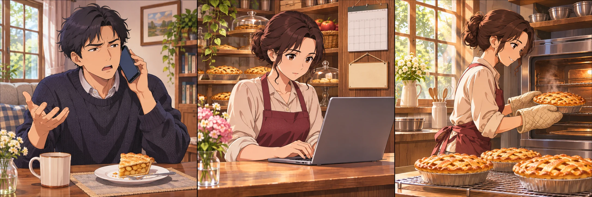
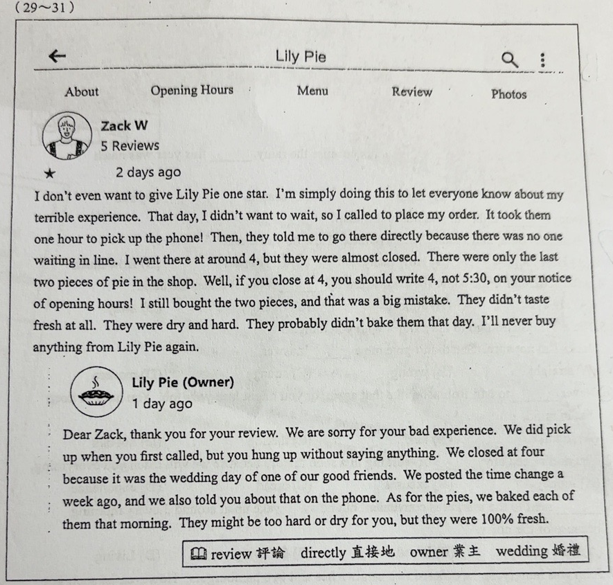
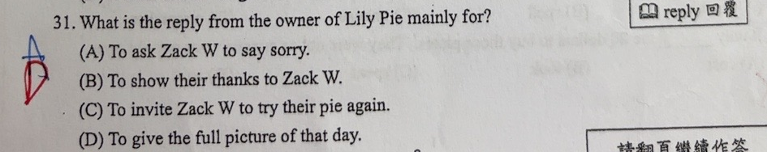

分享原卷｜第31題
完整原題
作答所需文章／材料
Lily Pie About Opening Hours Menu Review Photos Zack W 5 Reviews ★ 2 days ago I don’t even want to give Lily Pie one star. I’m simply doing this to let everyone know about my terrible experience. That day, I didn’t want to wait, so I called to place my order. It took them one hour to pick up the phone! Then, they told me to go there directly because there was no one waiting in line. I went there at around 4, but they were almost closed. There were only the last two pieces of pie in the shop. Well, if you close at 4, you should write 4, not 5:30, on your notice of opening hours! I still bought the two pieces, and that was a big mistake. They didn’t taste fresh at all. They were dry and hard. They probably didn’t bake them that day. I’ll never buy anything from Lily Pie again. Lily Pie (Owner) 1 day ago Dear Zack, thank you for your review. We are sorry for your bad experience. We did pick up when you first called, but you hung up without saying anything. We closed at four because it was the wedding day of one of our good friends. We posted the time change a week ago, and we also told you about that on the phone. As for the pies, we baked each of them that morning. They might be too hard or dry for you, but they were 100% fresh. 原卷字詞提示：review 評論；directly 直接地；owner 業主；wedding 婚禮；reply 回覆。先想一想，再查看答案、解說與原圖
逐項解析
| 選項與原句 | 判讀 | 句意與判斷理由 |
|---|---|---|
| (A) To ask Zack W to say sorry. | 不選 | 要求Zack道歉；回覆中的We are sorry是店家自己致歉，沒有要求Zack道歉。 |
| (B) To show their thanks to Zack W. | 不選 | 向Zack致謝；開頭確實道謝，但主要篇幅是解釋電話、營業時間和派的新鮮程度，這不是最完整的主旨。 |
| (C) To invite Zack W to try their pie again. | 不選 | 邀請Zack再次品嚐派；文中沒有提出此邀請。 |
| (D) To give the full picture of that day. | 應選 | 說明當天完整情況；回覆逐項補充評論未呈現的經過，最能涵蓋整段目的。 |
詳細說明與解題步驟
題目問「Lily Pie店主的回覆主要是為了什麼」。要看整段回覆的主要作用，不能只以第一句thank you判斷。
Zack的評論說店家一小時才接電話、四點就接近打烊，而且派又乾又硬，懷疑不是當天做的。店主逐項補充：第一次來電就有接聽，但Zack沒說話就掛斷；當天因朋友婚禮而四點關門，已在一週前公告並在電話中告知；派雖可能不合顧客喜好，卻都是當天早上現烤。這些內容的共同作用是補充事件另一方的經過，讓讀者了解當天完整情況，因此選D。
A把道歉的方向看反了：We are sorry是店家向Zack表達歉意，不是要求Zack道歉。B雖抓到開頭道謝，卻無法涵蓋後面大量解釋。C所說邀請Zack再試派，文中沒有出現。the full picture在此是「事情的全貌、完整情況」，不是一張完整照片。
閱讀評論與回覆時，也要分清兩方說法：評論中的「一小時才接」與店主回覆的「第一次就接了」是各自的陳述；本題考回覆目的，不要求替兩方裁定事實。

① 顧客先提出不滿
Zack說電話等很久、店家四點就打烊，派也不新鮮。先分清楚：這些是顧客在評論中提出的說法。
② 店主逐項補充經過
回覆不只開頭道謝，也解釋來電、提早打烊及事前公告。應看整段在做什麼，不能只抓thank you判主旨。
③ 新鮮度也是回覆的一部分
店主說派是當天早上烤的。這和電話、營業時間的說明合起來，是在補充當天全貌，不是在要求顧客道歉或邀請再買。
④ 看整段回覆，判斷主要目的
答案 D：交代當天完整情況
- the full picture＝事情的全貌。
- We are sorry是店家致歉，不是要求客人道歉。
- 主旨涵蓋整段，不只開頭的一句道謝。
核對註記：已實看真正使用者上傳的原卷及裁切成品，核對完整題幹、四個選項與必要閱讀文；冊次及教材章節無證據，歸綜合。日期取首次提問訊息的台灣日期，非實際考試日期。
原圖（僅本題）

